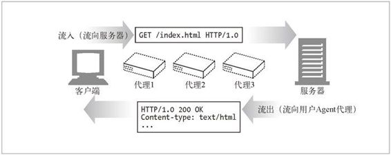
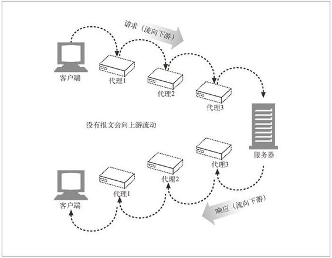

3.1 报文流
HTTP 报文是在 HTTP 应用程序之间发送的数据块。这些数据块以一些文本形式的元信息（meta-information）开头，这些信息描述了报文的内容及含义，后面跟着可选的数据部分。这些报文在客户端、服务器和代理之间流动。术语“流入”、“流出”、“上游”及“下游”都是用来描述报文方向的。
3.1.1 报文流入源端服务器
HTTP 使用术语流入（inbound）和流出（outbound）来描述事务处理（transaction）的方向。报文流入源端服务器，工作完成之后，会流回用户的 Agent 代理中（参见图 3-1）。

图 3-1 报文流入源端服务器并流回到客户端
3.1.2 报文向下游流动
HTTP 报文会像河水一样流动。不管是请求报文还是响应报文，所有报文都会向下游（downstream）流动（参见图 3-2）。所有报文的发送者都在接收者的上游（upstream）。在图 3-2 中，对请求报文来说，代理 1 位于代理 3 的上游，但对响应报文来说，它就位于代理 3 的下游 1。
1 术语“上游”和“下游”都只与发送者和接收者有关。我们无法区分报文是发送给源端服务器的还是发送给客户端的，因为两者都是下游节点。

图 3-2 所有报文都向下游流动